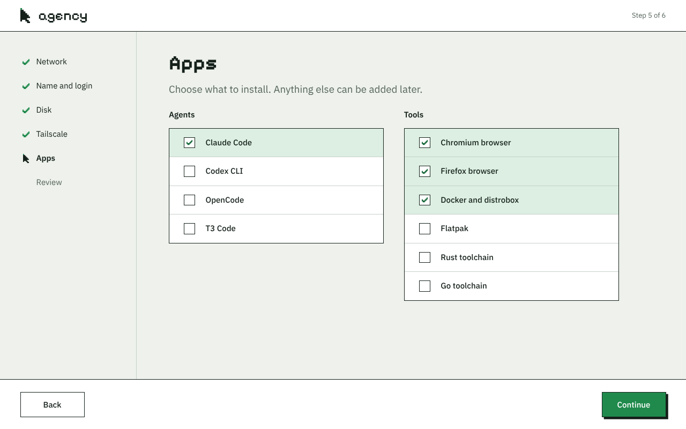

A computer for your agents
Agents are bad at sharing a computer with you. They want the mouse, the screen and the browser at the same moment you do, and you can't really let them run with full permissions on your own machine. agency turns a spare laptop or PC into one that only they use, so they get full control of it and you check in over SSH or from a browser tab.




What you get
A NixOS machine set up for agents to work on by themselves, with a few things in place for when one of them gets it wrong.
- Full control
- The agents share one account with passwordless sudo, so they can install and change anything on the machine.
- A desktop of their own
- A virtual desktop runs GUI apps and computer use. You can watch it or take over in a browser tab over Tailscale, which is how you type a password when a site asks for one.
- Nobody sits at it
- You reach it over SSH or Tailscale, and it keeps running with the lid closed.
- A way back
- Every change to the system becomes an entry in the boot menu. If an agent breaks something, you restart and pick an earlier one.
- An encrypted disk
- The TPM unlocks the disk at boot, so the machine starts without anyone there to type a passphrase.
- The apps you pick
- Claude Code, Codex CLI, OpenCode and T3 Code for agents, and Chromium, Firefox, Docker, Flatpak, Rust and Go for tools. Anything else can be added later.
How to install it
Setup takes about ten minutes and erases one disk. You choose which, and nothing is changed until you confirm on the last screen.
- Make sure your GitHub account has an SSH key on it, because that's how you'll log in.
- Download the ISO from the latest Build installer ISO run in the repo, and flash it to a USB stick.
- In the BIOS of the spare machine, turn Secure Boot off and the TPM on.
- Boot from the stick. The setup screen asks for the network, a name for the machine, your GitHub username, which disk to erase, a Tailscale sign-in (a QR code you scan with your phone) and which apps you want.
It installs, restarts, and you log in from your own computer, using the name you gave it:
ssh agent@agency
What it needs
- An x86-64 laptop or PC you can wipe
- UEFI firmware
- A TPM 2.0 chip
- Secure Boot turned off
- A USB stick, and a GitHub account with an SSH key
- Internet during setup, by cable or Wi-Fi
Does it work?
Not reliably yet. agency is new and has had very little testing on real machines, so expect the first install to trip on something. There is no one-click download yet either. The ISO comes from the Actions builds in the GitHub repo, which is also the place to report what broke.